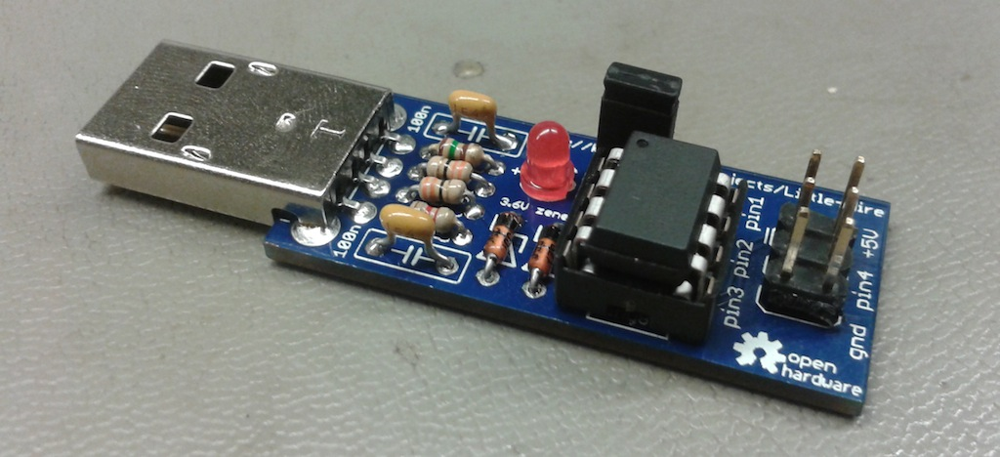

Short Story
When i saw simpleavr's implementation of usbtiny on attiny45 , i thought it would be cool if i make a kit version of this with a minimal form factor. Then i designed a PCB and sent for first prototype. Later on i thought, if i want to sell this, it would be much cooler ,and more suitable with "Open Source Hardware" concept, if i bring this project one step ahead. So i tried to fit anything extra to the device and this Little Wire project came out.
Little Wire is multi-featured USB controlled Open Source Hardware tool packed in a minimal form factor designed by ihsan Kehribar.
I collaborated with the Seeedstudio and they produced an initial batch for me and Little Wire kits went online in June 2012. After that batch finished in April 2013, notice the time difference, I decided not to continue producing them through contract manifacturing. Currently, you can't buy readymade Little Wire kits but since this is an OSHW project, you are free and welcomed to produce your own version.
Current firmware/software release version is v1.3. If your Little Wire isn't loaded with the v1.3 or the v1.2 firmware you can still use the old web site for reference or you can download the archive software/firmware releases from downloads page, but I advise you to upgrade your firmware. Below, you find how you can do this.
Features
- usbtinyisp compatible AVR programmer.
- 4 channel GPIO.
- ADC with 10 bit resolution.
- 2 parallel hardware PWM outputs.
- SPI interface.
- I2C interface.
- 1-Wire interface
- WS2812 RGB LED interface.
- Multiple device support.
Experimental Features
- 3 parallel software PWM outputs.
- Printf style debugging over AVR-ISP pins!
- Pic24f programmer with limited device support.
- USB to UART converter, by loading another firmware (CDC-232 port) Maximum advised baud rate is 4800 bps.
Note: This tool has to take instructions at run-time over USB. It can't work in a computerless environment.
Pin Mapping
| Silkscreen | usbtinyisp | Hard PWM | Soft PWM | ADC | I2C | SPI | Onewire | WS2812 | CDC-232 |
|---|---|---|---|---|---|---|---|---|---|
| pin1 | MISO | CH_B | CH_2 | - | - | DO | - | DATA | TX |
| pin2 | SCK | - | CH_3 | CH_1 | SCL | SCK | DATA | DATA | RX |
| pin3 | RESET | - | - | CH_0 | - | CS | - | DATA | - |
| pin4 | MOSI | CH_A | CH_1 | - | SDA | DI | - | DATA | - |
Software Support
When i first released Little Wire , it had native C,C++,C# and Processing support through custom libraries written by me. Later, maintaining multiple software libraries became a very demanding task. Therefore I dropped support for C++,C# and Processing libraries with the v1.3 release of Little Wire. If you still use your v1.0 / v1.1 firmware you can look at the archive releases to get support for those languages. Beware, software libraries are not backward/forward compatible and I definitely advice you to get the latest v1.2 firmware onto your device.
Doxygen documentation for the current C library can be found here: http://littlewire.cc/documentation/
For further support, please take a look at examples folder. If you want to contribute an example you can make a pull request so that I can add it to the main repo, or if you find a bug in one of the examples please open an issue ticket.
Ruby library: littlewire.rb
Even though this is not an official and complete library for the Little Wire, it is well developed and worth mentioning. This library is maintained by @Bluebie and covers most of the Little Wire features. If you are interested in controlling your Little Wire device from Ruby, it would be worth looking. You can find the details about this library here: https://github.com/Bluebie/littlewire.rb
Firmware Upgrade / Installation
If you have a bare Attiny85 chip:
First, you should upload the micronucleus bootloader software to your chip and you should set the fuses properly. Following is an example
avrdude -c usbtiny -p t85 -U flash:w:micronucleus-1.02.hex -U lfuse:w:0xe1:m -U hfuse:w:0x5d:m -U efuse:w:0xfe:mAfter you upload the bootloader to your chip, you can follow the steps below.
If your Attiny85 has micronucleus bootloader installed:
You can upload the desired firmware via the micronucleus commandline application.
micronucleus littlewire_v13.hexAlternatively, you can use the 'single-click littlewire firmware installer' applications which you can find from:
You can find the micronucleus commandline application from here: https://github.com/Bluebie/micronucleus-t85
If your Attiny85 has fast tiny & mega UART bootloader installed:
- You can upload the latest firmware via onboard bootloader, but I don't recommend sticking to the old bootlodaer, you should change it. Micronucleus is really good ...
- You can use a HVSP programmer like STK500, AVR Dragon or a high voltage fuse resetter device like "HV Rescue Shield" or "HSVP Fuse Resetter" to reset your device completely. After you disable the RSTDISBL fuse, you can follow the "If you have a bare Attiny85 chip" steps.
- You can buy an empty Attiny85 chip and start from the begining.
- You can replace your bootloader via, uploading a "upgrader firmware". This type of firmware is a very special invention comes from Blubie (Jenna Fox) which replaces the onboard bootloader with the micronucleus. You can read more about this technique from here: https://github.com/Bluebie/micronucleus-t85/tree/master/upgrade. It is a very experimental technique but many people reported that this is working and you might want to try it too.
If you bought your Little Wire from Seeedstudio:
- Unfortunately, micronucleus bootloader wasn't a thing when I was designing the v1.0 release of the Little Wire. Therefore your device has the fast tiny & mega UART bootloader. You can follow the steps above.
Where are the pre-compiled binaries, drivers and archives?
You can find them from the downloads page: http://littlewire.cc/downloads.html
Reference projects
- This project is proudly and heavily based on:
- Original usbtiny project: http://www.xs4all.nl/~dicks/avr/usbtiny/
- Ladyada version of usbtiny: http://www.ladyada.net/make/usbtinyisp/
- simpleavr's implementation of usbtiny on Attiny45: http://www.simpleavr.com/avr/vusbtiny
- "fast tiny & mega UART bootloader" project from AVR freaks: http://tinyurl.com/fastTinyAndMega-UARTbootloader
- Micronucleus bootloader: https://github.com/Bluebie/micronucleus-t85
Please note:
Do not use the Adafruit USB VID/PID without written permission from Adafruit Industries, LLC and
Limor "Ladyada" Fried (support@adafruit.com). Permission is granted for littlewire, Ihsan Kehribar
and Seeed Studio by Adafruit Industries, LLC to use the Adafruit USB VID/PID for littlewire
(SKU:AVR06071P)